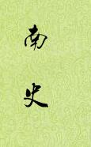

| 历史史籍 > |
| 南史 |
| 作者：李延寿 |
|
南史，二十四史之一，纪传体，含本纪10卷、列传70卷，共80卷。上起宋武帝刘裕永初元年（420年），下迄陈后主陈叔宝祯明三年（589年）。记载南朝宋、齐、梁、陈四国一百七十年史事。《南史》与《北史》为姊妹篇，由李大师及其子李延寿编撰。 《南史》把南朝各史的纪传汇合起来，删烦就简，以便阅读。列传中不同朝代的父子祖孙，以家族为单位合为一卷，对于了解门阀制度盛行的南北朝社会，有一定的方便。对各朝正史以删节为主，但有应删而未删的，如宋、齐、梁、陈四朝受禅前后的九锡文和告天之词等官样文章；有过求简练以致混乱不确切的，如把都督某某几州诸军事、某州刺史的官衔，一律省成某某州刺史加都督；也有由于对原书史文未能很好领会而把重要字句删去的。《南史》中也有沈约《宋书》、萧子显《南齐书》等书中所未载的材料，虽然细微琐事较多，而且杂以神怪迷信，但也不乏有意义的史料。《宋书》未立文学传，《南史》以因袭为主，因而文学传不包括宋而从南齐丘灵鞠开始。这说明李延寿拘泥于原书，没有达到李大师横则沟通南北，纵则贯串几代，综合成为新著的意图。 [2018/12/23 重新整理] |
 |